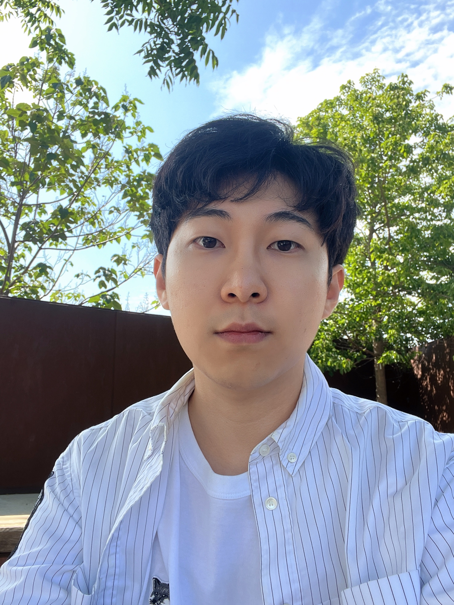

|
SungJun Cho
sungjun.cho@ndcn.ox.ac.uk
I am an incoming DPhil student in the OHBA Analysis Group at the University of Oxford,
advised by Mark Woolrich and Oiwi Parker Jones.
My research will focus on developing interpretable attention-based generative models for neuroimaging data.
Previously, I received an MSc in Psychiatry from the same group, under the supervision of Mark Woolrich, Mats van Es,
and Chetan Gohil. Prior to this, I was part of Lunit's AutoML
team, working on the hyperparameter optimization problem. I completed my undergraduate studies in neuroscience and philosophy at the University of Chicago.
[CV]
[Github]
[Google Scholar]
[LinkedIn]
|

|
News
- 🎤 June 2024: Presented a poster at OHBM 2024.
- 🔖 May 2024: A paper on dynamic resting-state networks now available on bioRxiv.
- 🎓 December 2023: Awarded MSc by Research in Psychiatry at the University of Oxford.
- 🎤 October 2023: Presented a poster at MEG-UKI about my work on resting-state networks in M/EEG under healthy aging.
- 🔖 August 2023: Cho & Choi (2023) featured as one of the Most Read papers in JNE.
Research
I have a strong interest in computational neuropsychiatry, neural oscillations, and neuroimaging.
My research thus far has focused on developing and applying computational methods to understand the neural dynamics underlying our cognition
and behavior in health and disease.
Representative papers are highlighted.
|
|
A guide towards optimal detection of transient oscillatory bursts with unknown parameters
SungJun Cho,
Jee Hyun Choi
Journal of Neural Engineering (2023)
[
Paper,
Code
]
This study compares different burst detection algorithms designed to detect transient neural oscillatory events from electrophysiological signals
and discuss their respective limitations. We additionally propose a selection rule that aims to identify an optimal algorithm for a given dataset
based on the signal properties of burst events.
|
|
|
Improving Multi-fidelity Optimization with a Recurring Learning Rate for Hyperparameter Tuning
Hyun Jae Lee, Gihyun Kim, Junhwan Kim, SungJun Cho, Dohyun Kim, Donggeun Yoo
WACV (2023)
[Paper]
This paper introduces a novel algorithm for multi-fidelity hyperparameter optimization in CNN called Multi-fidelity Optimization with a Recurring Learning rate (MORL).
Our algorithm leverages the properties of recurring learning rate schedules to select high-performing hyperparameter configurations that often converge slowly,
thereby preventing the early termination of best configurations in the standard low-fidelity optimization process.
|
|
|
Role of paroxysmal depolarization in focal seizure activity
Andrew K Tryba, Edward M Merricks, Somin Lee, Tuan Pham, SungJun Cho, ... Wim van Drongelen
Journal of Neurophysiology (2019)
[Paper]
Sustained focal seizure activity is a multiscale phenomenon, observed at both the meso- (microelectrode arrays) and macro- (standard clinical recordings) scales.
This work hypothesizes that the local failure of inhibition at the mesoscopic level caused by paroxysmal depolarization gives rise to the propagation of ictal waves,
whereas the inhibition in surrounding regions persists to support oscillatory activity at the macroscopic level. Theoretical, experimental, and clinical evicence are
presented to support this dual role of inhibition.
|
© SungJun Cho | Design: Source | Hosted by GitHub Pages
|
{kind=link}